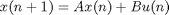
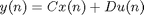
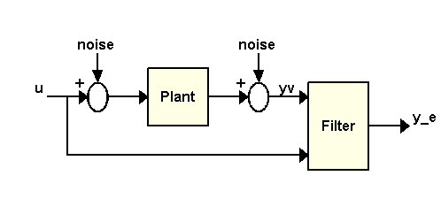
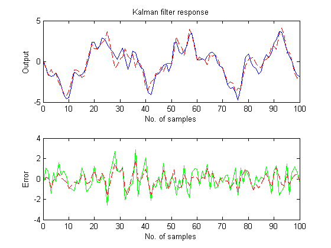
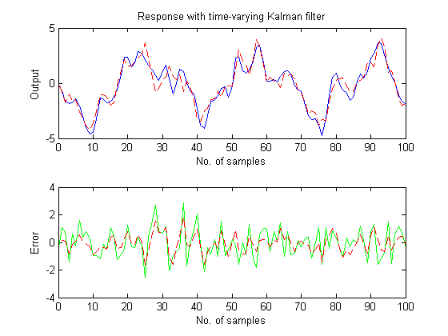
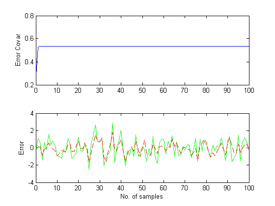

Kalman Filter Design
This demo demonstrates MATLAB® ability to perform Kalman filtering. Both a steady state filter and a time varying filter are designed and simulated below.
Contents
Problem Description
Given the following discrete plant


where
A = [1.1269 -0.4940 0.1129,
1.0000 0 0,
0 1.0000 0];
B = [-0.3832
0.5919
0.5191];
C = [1 0 0];
D = 0;
design a Kalman filter to estimate the output y based on the noisy measurements yv[n] = C x[n] + v[n]
Steady-State Kalman Filter Design
You can use the function KALMAN to design a steady-state Kalman filter. This function determines the optimal steady-state filter gain M based on the process noise covariance Q and the sensor noise covariance R.
First specify the plant + noise model. CAUTION: set the sample time to -1 to mark the plant as discrete.
Plant = ss(A,[B B],C,0,-1,'inputname',{'u' 'w'},'outputname','y');
Specify the process noise covariance (Q):
Q = 2.3; % A number greater than zero
Specify the sensor noise covariance (R):
R = 1; % A number greater than zero
Now design the steady-state Kalman filter with the equations
Time update: x[n+1|n] = Ax[n|n-1] + Bu[n]
Measurement update: x[n|n] = x[n|n-1] + M (yv[n] - Cx[n|n-1])
where M = optimal innovation gain using the KALMAN command:
[kalmf,L,P,M,Z] = kalman(Plant,Q,R);
The first output of the Kalman filter KALMF is the plant output estimate y_e = Cx[n|n], and the remaining outputs are the state estimates. Keep only the first output y_e:
kalmf = kalmf(1,:);
M, % innovation gain
M =
0.5345
0.0101
-0.4776
To see how this filter works, generate some data and compare the filtered response with the true plant response:

To simulate the system above, you can generate the response of each part separately or generate both together. To simulate each separately, first use LSIM with the plant and then with the filter. The following example simulates both together.
% First, build a complete plant model with u,w,v as inputs and % y and yv as outputs: a = A; b = [B B 0*B]; c = [C;C]; d = [0 0 0;0 0 1]; P = ss(a,b,c,d,-1,'inputname',{'u' 'w' 'v'},'outputname',{'y' 'yv'});
Next, connect the plant model and the Kalman filter in parallel by specifying u as a shared input:
sys = parallel(P,kalmf,1,1,[],[]);
Finally, connect the plant output yv to the filter input yv. Note: yv is the 4th input of SYS and also its 2nd output:
SimModel = feedback(sys,1,4,2,1);
SimModel = SimModel([1 3],[1 2 3]); % Delete yv form I/O
The resulting simulation model has w,v,u as inputs and y,y_e as outputs:
SimModel.inputname
ans =
'w'
'v'
'u'
SimModel.outputname
ans =
'y'
'y_e'
You are now ready to simulate the filter behavior. Generate a sinusoidal input vector (known):
t = [0:100]'; u = sin(t/5);
Generate process noise and sensor noise vectors:
randn('seed',0);
w = sqrt(Q)*randn(length(t),1);
v = sqrt(R)*randn(length(t),1);
Now simulate the response using LSIM:
clf; [out,x] = lsim(SimModel,[w,v,u]); y = out(:,1); % true response ye = out(:,2); % filtered response yv = y + v; % measured response
Compare the true response with the filtered response:
clf subplot(211), plot(t,y,'b',t,ye,'r--'), xlabel('No. of samples'), ylabel('Output') title('Kalman filter response') subplot(212), plot(t,y-yv,'g',t,y-ye,'r--'), xlabel('No. of samples'), ylabel('Error')
As shown in the second plot, the Kalman filter reduces the error y-yv due to measurement noise. To confirm this, compare the error covariances:
MeasErr = y-yv; MeasErrCov = sum(MeasErr.*MeasErr)/length(MeasErr); EstErr = y-ye; EstErrCov = sum(EstErr.*EstErr)/length(EstErr);
Covariance of error before filtering (measurement error):
MeasErrCov
MeasErrCov =
1.1138
Covariance of error after filtering (estimation error):
EstErrCov
EstErrCov =
0.4309
Time-Varying Kalman Filter Design
Now, design a time-varying Kalman filter to perform the same task. A time-varying Kalman filter can perform well even when the noise covariance is not stationary. However for this demonstration, we will use stationary covariance.
The time varying Kalman filter has the following update equations.
Time update: x[n+1|n] = Ax[n|n] + Bu[n]
P[n+1|n] = AP[n|n]A' + B*Q*B'
Measurement update:
x[n|n] = x[n|n-1] + M[n](yv[n] - Cx[n|n-1])
-1
M[n] = P[n|n-1] C' (CP[n|n-1]C'+R)P[n|n] = (I-M[n]C) P[n|n-1]
First, generate the noisy plant response:
sys = ss(A,B,C,D,-1); y = lsim(sys,u+w); % w = process noise yv = y + v; % v = meas. noise
Next, implement the filter recursions in a FOR loop:
P=B*Q*B'; % Initial error covariance x=zeros(3,1); % Initial condition on the state ye = zeros(length(t),1); ycov = zeros(length(t),1); for i=1:length(t) % Measurement update Mn = P*C'/(C*P*C'+R); x = x + Mn*(yv(i)-C*x); % x[n|n] P = (eye(3)-Mn*C)*P; % P[n|n] ye(i) = C*x; errcov(i) = C*P*C'; % Time update x = A*x + B*u(i); % x[n+1|n] P = A*P*A' + B*Q*B'; % P[n+1|n] end
Now, compare the true response with the filtered response:
subplot(211), plot(t,y,'b',t,ye,'r--'), xlabel('No. of samples'), ylabel('Output') title('Response with time-varying Kalman filter') subplot(212), plot(t,y-yv,'g',t,y-ye,'r--'), xlabel('No. of samples'), ylabel('Error')
The time varying filter also estimates the output covariance during the estimation. Plot the output covariance to see if the filter has reached steady state (as we would expect with stationary input noise):
subplot(211)
plot(t,errcov), ylabel('Error Covar'),
 From the covariance plot you can see that the output covariance did reach a steady state in about 5 samples. From then on, the time varying filter has the same performance as the steady state version.
Compare covariance errors:
MeasErr = y-yv; MeasErrCov = sum(MeasErr.*MeasErr)/length(MeasErr); EstErr = y-ye; EstErrCov = sum(EstErr.*EstErr)/length(EstErr);
Covariance of error before filtering (measurement error):
MeasErrCov
MeasErrCov =
1.1138
Covariance of error after filtering (estimation error):
EstErrCov
EstErrCov =
0.4303
Verify that the steady-state and final values of the Kalman gain matrices coincide:
M,Mn
M =
0.5345
0.0101
-0.4776
Mn =
0.5345
0.0101
-0.4776